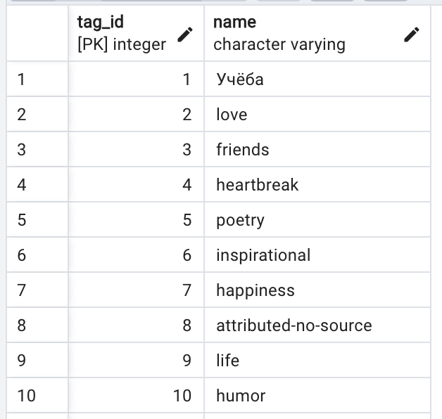
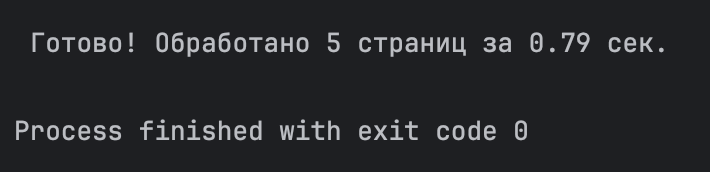
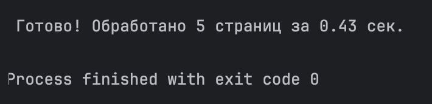

Задание 2: Параллельный парсинг веб-страниц с сохранением в базу данных
В таблицу Tag в столбец Name добавляются тэги с сайта https://quotes.toscrape.com/. Парсились первые 5 страниц сайта.

Threading (многопоточность)
Код:
# Функция парсинга и сохранения тегов
def parse_and_save(url: str):
try:
print(f"[{threading.current_thread().name}] Парсим: {url}")
response = requests.get(url, timeout=10)
response.raise_for_status()
soup = BeautifulSoup(response.text, "html.parser")
tag_elements = soup.select("a.tag")
with Session(engine) as session:
for tag_el in tag_elements:
tag_name = tag_el.text.strip()
if tag_name:
exists = session.exec(select(Tag).where(Tag.name == tag_name)).first()
if not exists:
session.add(Tag(name=tag_name))
print(f"[{threading.current_thread().name}] Сохранили тег: {tag_name}")
session.commit()
except Exception as e:
print(f"[{threading.current_thread().name}] Ошибка при обработке {url}: {e}")
if __name__ == "__main__":
threads = []
start_time = time.time()
for url in urls:
t = threading.Thread(target=parse_and_save, args=(url,))
t.start()
threads.append(t)
for t in threads:
t.join()
end_time = time.time()
print(f"\n Готово! Обработано {len(urls)} страниц за {round(end_time - start_time, 2)} сек.")
Время выполнения:

Multiprocessing (многопроцессность)
Код:
# Функция парсинга и сохранения тегов
def parse_and_save(url: str):
try:
print(f"[Process] Парсим: {url}")
response = requests.get(url, timeout=10)
response.raise_for_status()
soup = BeautifulSoup(response.text, "html.parser")
tag_elements = soup.select("a.tag")
with Session(engine) as session:
for tag_el in tag_elements:
tag_name = tag_el.text.strip()
if tag_name:
exists = session.exec(select(Tag).where(Tag.name == tag_name)).first()
if not exists:
session.add(Tag(name=tag_name))
print(f"[Process] Сохранили тег: {tag_name}")
session.commit()
except Exception as e:
print(f"[Process] Ошибка при обработке {url}: {e}")
if __name__ == "__main__":
processes = []
start_time = time.time()
for url in urls:
p = Process(target=parse_and_save, args=(url,))
p.start()
processes.append(p)
for p in processes:
p.join()
end_time = time.time()
print(f"\n Готово! Обработано {len(urls)} страниц за {round(end_time - start_time, 2)} сек.")
Время выполнения:
Asyncio (асинхронность)
Код:
async def fetch_and_save(session: aiohttp.ClientSession, url: str):
try:
print(f"[Async] Парсим: {url}")
async with session.get(url, timeout=10) as resp:
html = await resp.text()
soup = BeautifulSoup(html, "html.parser")
tag_elements = soup.select("a.tag")
with Session(engine) as db_session:
for tag_el in tag_elements:
tag_name = tag_el.text.strip()
if tag_name:
exists = db_session.exec(select(Tag).where(Tag.name == tag_name)).first()
if not exists:
db_session.add(Tag(name=tag_name))
print(f"[Async] Сохранили тег: {tag_name}")
db_session.commit()
except Exception as e:
print(f"[Async] Ошибка при обработке {url}: {e}")
async def main():
async with aiohttp.ClientSession() as session:
tasks = [fetch_and_save(session, url) for url in urls]
await asyncio.gather(*tasks)
if __name__ == "__main__":
start = time.time()
asyncio.run(main())
end = time.time()
print(f"\n Готово! Обработано {len(urls)} страниц за {round(end - start, 2)} сек.")
Время выполнения:

Вывод
Для задач, связанных с большим количеством сетевых запросов (парсинг сайтов, запросы к API), наилучшим решением является asyncio, так как он обеспечивает максимальную эффективность и масштабируемость при минимальной нагрузке на систему.
Парсинг веб-страниц — это I/O-интенсивная задача, т.е. программа большую часть времени ждёт, пока загрузится HTML.
asyncio позволяет выполнять I/O-операциb параллельно в одном потоке, не создавая потоки или процессы.